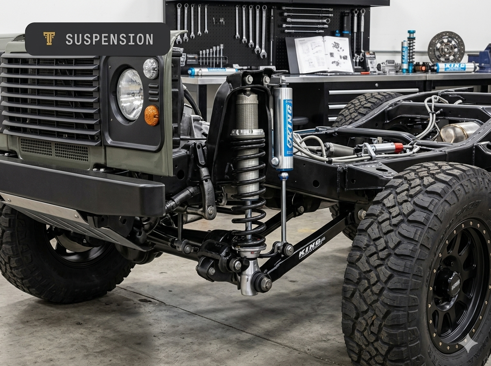
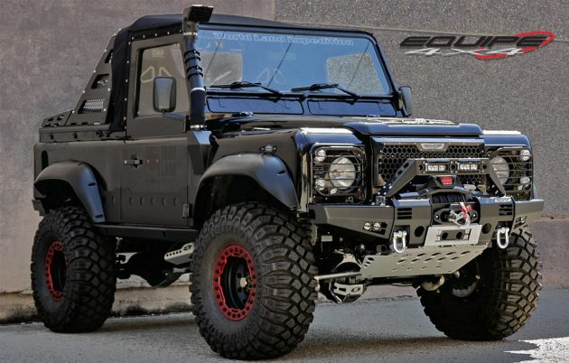

Suspension Service
Tactical Suspension
Advanced suspension systems for serious payload capacity, articulation, and long-travel off-road control.
Pricing Estimate: LKR 220,000 - 360,000
Duration: 3-5 weeks
Compatibility: 4x4 trucks & SUVs
Workshop Notes
We tailor damper curves and spring rates to your vehicle, load, and terrain so every mile feels planted and premium.
Included Upgrades
- High-performance coilover kits
- Long travel control arms
- Reinforced chassis mounts
- Adjustable ride height tuning

Detailed Description
We build suspension systems for demanding off-road environments, combining precision shocks with tough link geometry and chassis reinforcement.
Compatibility
- Toyota Hilux
- Ford Ranger
- Land Rover Defender
Service Duration
This upgrade is completed in 3 to 5 weeks, including test alignment and calibration.
Before / After Gallery

Workshop Notes
All suspension assemblies are bench-tested, fitted, and tuned on a dynamic rig before final vehicle delivery.